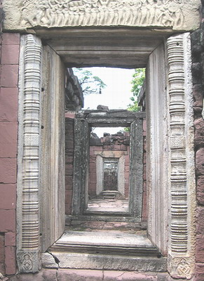

|  | ซุ้มประตูและกำแพงชั้นในหรือระเบียงคดทางเดินกลางลานปราสาทที่ทอดตรงมายังประตูทางเข้าของกำแพงชั้นในด้านทิศใต้กำแพงชั้นในของปราสาทต่างจากกำแพงชั้นนอก คือก่อเป็นห้องยาวต่อเนื่องกันเป็นรูปสี่เหลี่ยมผืนผ้าล้อมรอบลานปราสาทชั้นใน คล้ายเป็นทางเดินที่มีผนังกั้นและมีหลังคาคลุมอันเป็นลักษณะที่เรียกกันว่าระเบียงคด ภายในสามารถเดินทะลุถึงกันได้โดยตลอด ระเบียงคดทั้ง 4 ด้านก่อด้วยหินทรายสีแดง ยกเว้นส่วนที่ต้องการความแข็งแรงเป็นพิเศษและสลักลวดลายประดับ เช่น กรอบประตู กรอบหน้าต่าง เสารับทับหลัง จะใช้หินทรายสีขาว ห้องยาวนี้ก่อสูงขึ้นมาจากระดับพื้นดินประมาณ 1 เมตร กว้าง 2.35 เมตร ความยาวของด้านทิศเหนือและทิศใต้ 72 เมตร ด้านทิศตะวันออกและตะวันตกยาว 80 เมตร ผนังด้านในทุกด้านเจาะหน้าต่างเป็นระยะตรงกัน ส่วนผนังด้านนอกปิดทึบแต่ทำเป็นหน้าต่างหลอกประดับลูกกรงสลักด้วยหินทรายอย่างที่เรียกกว่าลูกมะหวด หลังคามุงด้วยหินทรายสลักด้านนอกเลียนแบบกระเบื้องก่อเหลื่อมซ้อนกันขึ้นไปเป็นรูปโค้งคล้ายประทุนเรือซึ่งระเบียงคดทั้ง 4 ด้าน มีซุ้มประตูอยู่ในแนวตรงกันกับซุ้มประตูกำแพงชั้นนอกอีก 2 ชั้น และตรงกันกับประตูปราสาทองค์กลางหรือปรางค์ประธาน มีลักษณะคล้ายคลึงกันกับประตูซุ้มของกำแพงปราสาทชั้นนอกแต่มีขนาดเล็กกว่า พื้นห้องปูด้วยหินทราย และมีหลุมเสา เจาะลงไปในแท่งหินปูพื้นบางส่วน เช่นเดียวกับที่โคปุระชั้นนอกทุกด้านมีช่องประตูผ่านได้ 3 ช่อง ที่มุมระเบียงคดทั้ง 4 ทำเป็นซุ้มมีประตูจริงเฉพาะที่ระเบียงด้านทิศใต้ ส่วนด้านอื่นเป็นประตูหลอก(จรรยา มาณะวิท และระวิวรรณ บุญญศาสตร์พันธุ์, 2542: 38-39 ; กรมศิลปากร, 2552: 43-44) |